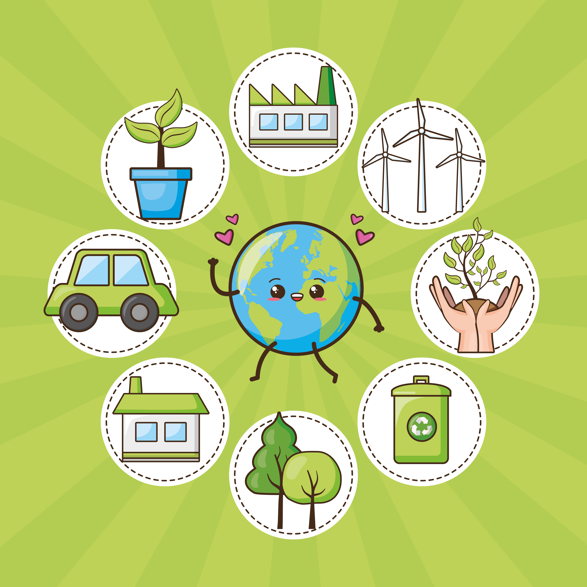

TRES FORMAS DE ENTENDER LA ECONOMÍA
|
En las sesiones anteriores hemos analizado cómo se organizan las economías, cómo se toman las decisiones económicas y qué papel desempeñan las familias, las empresas y el sector público. Ahora vamos a dar un paso más: conoceremos otras formas de producir, consumir y utilizar los recursos, y reflexionaremos sobre cómo podemos aplicar estas ideas a nuestro propio entorno. ¿Podemos satisfacer nuestras necesidades y mejorar nuestro bienestar utilizando los recursos de una forma diferente?Antes de la sesión, visualiza en casa los vídeos seleccionados sobre: |
 |
A continuación responde a las siguientes preguntas:
|
Para cada uno de los tres conceptos 1. ¿Qué problema del modelo económico actual intenta abordar? 2. ¿Cuál es su idea principal? 3. ¿Qué propone cambiar en nuestra forma de producir, consumir o utilizar los recursos? 4. Escribe un ejemplo concreto. 5. ¿Qué dudas o preguntas te han surgido al ver el vídeo? |
En clase...
En grupos, elegid uno de los tres modelos y debatid durante 4-5 minutos:
¿Creéis que esta propuesta puede solucionar realmente alguno de los problemas del modelo económico actual o simplemente los aborda de otra manera? Podéis plantear un argumento a favor de la propuesta., un posible inconveniente o límite , una condición necesaria para que pueda funcionar.
ENCUESTA: ASÍ CONSUME NUESTRO INSTITUTO
Una vez comprendidos los tres conceptos, vamos a aplicarlos a una realidad cercana: nuestro propio instituto.
|
Hasta ahora hemos hablado de cómo consume "la sociedad". Ahora vamos a investigar cómo consumimos nosotros. Realizaremos una encuesta a la comunidad educativa para conocer algunos de nuestros hábitos de consumo. En grupos, vamos a investigar diferentes dimensiones del consumo del centro. Cada grupo será responsable de una de ellas:
|
Diseñamos la encuesta
| Cada grupo elaborará 6 preguntas sobre su dimensión: 4 cerradas, 1 de frecuencia y 1 abierta. Revisaremos las preguntas entre grupos y seleccionaremos las más adecuadas para crear una única encuesta para todo el instituto. Utilizaremos Google Forms para enviar nuestra encuesta a otros grupos. |
Analizamos los resultados
|
Una vez recogidas las respuestas, cada grupo analizará los datos correspondientes a su dimensión. Podemos emplear herramientas de análisis de datos como Excel o Google Sheets. Debéis identificar:
|
Presentamos nuestro diagnóstico
| Cada grupo dispondrá de 2 minutos para presentar sus resultados y propuesta al resto de la clase. Finalmente, entre todos elegiremos una medida prioritaria para conseguir un consumo más sostenible en nuestro instituto. |
| Después de analizar nuestros propios hábitos de consumo, ¿qué cambio consideras más necesario en nuestro instituto? ¿Con cuál de los tres conceptos trabajados lo relacionas y por qué? |